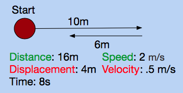
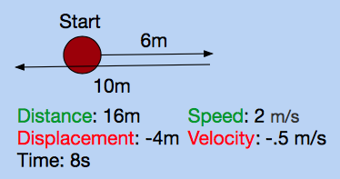
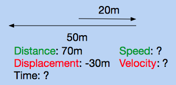
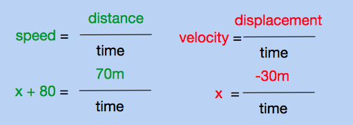

We've established the difference between vectors and scalars. However, there are other vectors and scalars besides displacement and distance. Two must-know's in physics are speed and velocity. As you know, speed is the rate at which distance changes with respect to time. You may have heard the term velocity, but not have known the difference between velocity and speed. Velocity is how displacement changes with respect to time.
Speed vs. Velocity
Let's say you walk forward 10 meters, then walk backwards 6 meters. It takes you 8 seconds to do this. We know that the distance traveled is 16 meters, and the displacement is 4 meters. If we want to find the speed and velocity, we divide the distance by time, or the displacement by time, respectively. Both speed and velocity use the unit meters per second, or m/s.


Positives and Negative Values for Velocity
Since vector values have direction, they can be positive or negative. Since speed only represents magnitude, it can only be positive. What is negative and what is positive depends on which way you define positive and negative. The convention in physics is that up, north, east, right, and forward are all defined as positive. Likewise, down, south, west, left, and backwards are all defined as negative. This holds true for displacement as well.

In the scenario above, the ball travels 6 meters to the right, and then 10 meters to the left. Since right is defined as positive by convention, the displacement is -4 meters. Therefore, the velocity is -.5 meters.
This interactive program allows you to see the relationship between speed and velocity. Click on the window, and use the arrow keys to move the circle around. Press start, and a clock will count out 10 seconds. At the top, you will see the average speed and velocity attained over 10 seconds, as well as the distance and velocity from the origin.
Notice how at any point in time, the average speed is the distance divided by time, and the average velocity is the displacement divided by time. This can most easily be seen at the end of 10 seconds.
Practice Problems
1. A ball falls 5 meters in one second. What is its average speed and velocity? Remember the conventions for positive and negative.
2. A woman jogs 40 meters forward, then doubles back and jogs 80 meters backwards. It takes her 12 seconds to do this. What is her average speed and velocity?
3. An athlete jumps to a maximum height of 2 meters. After she lands, if her average speed is 4 meters per second, how long was she in the air for, and what was her average velocity?
4. Regarding the program, is it possible to have an average velocity that is positive while the ball is to the left of the starting point?
5. Regarding the program, is it possible to have an instantaneous velocity that is positive while the ball is to the left of the starting point?
6. True or False.
If the speed is positive, the velocity must be positive.
7. True or False.
If the velocity is positive, the speed must be positive.
8. True or False.
If the speed is 0, the velocity must be 0.
9. True or False.
If the velocity is 0, the speed must be 0.
10. (Challenge) A rowdy teenager drives 20 meters forwards. In a display of his car's reversing capabilities, he suddenly speeds backwards 50 meters. At the end of his stunt, if the difference between the average velocity and average speed is 80 meters per second, what is his average speed and velocity, and how long does the stunt last?
Practice Answers
1.
Speed: 5 meters per second
Velocity: -5 meters per second
It travels 5 meters, so that is its distance. It falls down 5 meters, so the displacement is -5 meters by convention. To find the speed and velocity, divide the distance and displacement by time, respectively.
2.
Speed: 10 meters per second
Velocity: -3.33 meters per second
First find the distance and displacement. The distance is 120 meters, while the displacement is -40 meters. Then divide both by 12 seconds, to get average speed and velocity.

3.
Time: 1 second
Velocity: 0 meters per second
The athlete jumps up to two meters, so by the time she lands, she has traveled 4 meters. We want to solve for time, and we know speed and distance. Since speed is distance over time, time is distance over speed. Dividing 4 by 4 gives us one second. Since the athlete ends up where she started, her displacement is 0, and therefore her velocity is zero.

4.
It is not possible
If the ball is to the left of the starting point, this means negative displacement. Since velocity is displacement over time, it is impossible for the velocity to be positive if the displacement is negative.
5.
It is possible
The instantaneous velocity is a measure of the velocity at a single instance in time. If the ball is traveling to the right, then its instantaneous velocity is positive.
6.
False
Speed is always positive, even when the velocity is negative. Therefore, knowing the speed tells us nothing about the sign of the velocity.
7.
True
If the velocity is positive, that means the displacement is positive. If the displacement is positive, that means the distance is positive. Therefore, the speed is positive, because speed shares the same sign as distance, just as average velocity always shares the same sign as average displacement.
8.
True
If the speed is zero, the distance is zero. Therefore, the displacement is zero. Since the displacement is zero, the velocity is zero.
9.
False
If the velocity is zero, the displacement is zero. However, the distance can still be nonzero. One example is if you walk forward one meter, then back one meter. Your displacement is 0 meters, but your distance is 2 meters. Since the distance could be nonzero, the speed could be nonzero.
10.
Average Speed: 56 meters per second
Average Velocity: -24 meters per second
Time: 1.25 seoncds
Start by drawing the scenario. From the prompt, we automatically know the distance and displacement.

The prompt tells us that the difference between average speed and velocity is 80. Speed is always greater or equal to velocity, so in this scenario speed must be 80 meters per second greater than the velocity. We can represent this with variables: let x be velocity, and x + 80 be speed.

We know that speed is distance over time. We also know that velocity is displacement over time. Since we have variables for most of these criteria, we can write out equations for it.

Notice that there's a common variable, time. Solve for time, then we can set both equations equal to each other.

x represents velocity. Therefore the average velocity is -24 meters per second. The speed is the velocity plus 80 meters per second, so the speed is 56 meters per second. To find the time, we can either divide the distance by the speed, or the velocity by the displacement. Both calculations give you 1.25 seconds.
Back to Mechanics